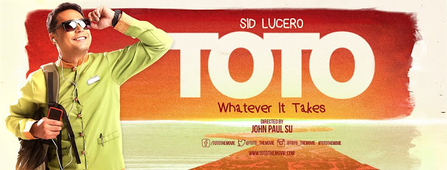
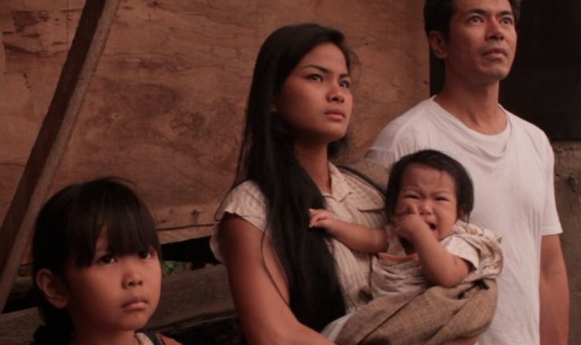
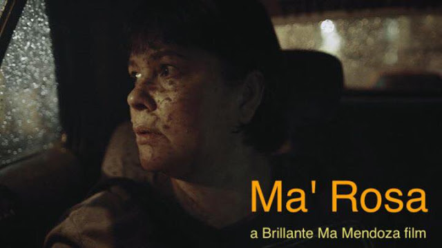
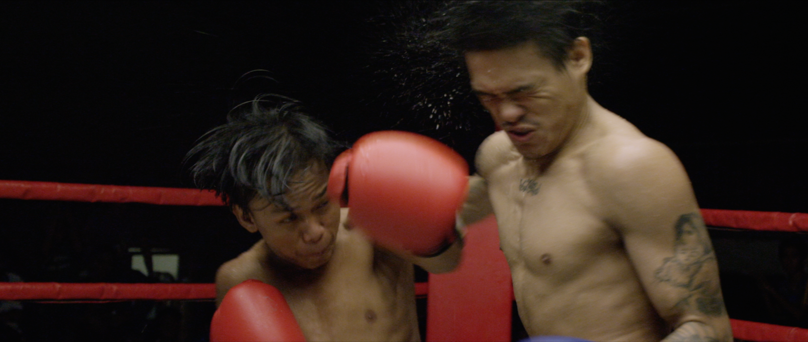
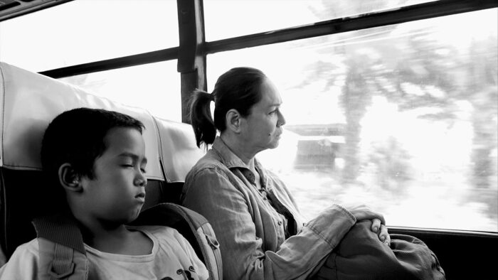

Filipino Films
Following World War II, Filipinos became increasingly active in radio, television, and the production of comic books known as komiks. They were influenced by a variety of things over the years, which impacted their filmmaking storylines.
Award winning Filipino films
TOTO (2015)

Sid Lucero won Best Actor at the 19th Los Angeles Comedy Festival for his performance in TOTO. TOTO is a movie that takes a lighthearted look at the Filipino fixation with the American dream. Antonio "Toto" Estares is the family's lone breadwinner and a room attendant in Manila.
Himala (1982)

The film was shot in three weeks and stars a beloved actress from the Philippines, Nora Aunor. It tells the tale of a little girl whose visions of the Virgin Mary raise a stir in her small town. Himala won the Viewer's Choice Award at the CNN Asia Pacific Screen Awards in 2008.
Metro Manila (2013)

The Philippines film Metro Manila won the 2013 Sundance Film Festival's Audience Award. The film was cited by renowned director Pedro Almodóvar as one of his favorites of 2013. In the film, a family moves from the countryside to the city in search of a better life. They immediately become enmeshed in Manila's seedy underbelly.
Ma’ Rosa (2016)

Filipino drama directed by Brillante Mendoza, Jaclyn Jose won best actress at the 2016 Cannes Film Festival for her portrayal of a poor, drug-dealing mother. Ma' Rosa was called "a cold, harsh look at what it means to be poor" by critic Peter Bradshaw. The film is particularly pertinent in light of President Duterte's campaign on drugs in the Philippines.
Kid Kulafu (2015)

Kid Kulafu, which focuses on the first 15 years of boxing legend Manny Pacquiao's life, reveals the boxer's modest beginnings as he struggles to survive on the streets of General Santos City. Although it seems that his inherent aptitude for boxing is the only thing keeping him out of poverty, the road to fame is a hard one. Involved in the production of the movie, Pacquiao set up important interviews and edited the script to make it more accurate. At the Guam International Film Festival, Robert Villar, who portrays the young Pacquiao, won the Achievement in Acting Award.
The Woman Who Left (2016)

The Woman Who Left won the Golden Lion at the 73rd Venice Film Festival. The movie's overarching story, while essentially a tale about retribution, sheds light on the consequences of Spain's colonization of the Philippines. This may be suitable for folks with a short attention span because it lasts approximately four hours.
Reference:
https://www.ecufilmfestival.com/the-influences-of-filipino-films/
https://theculturetrip.com/philippines/articles/must-watch-award-winning-filipino-movies/